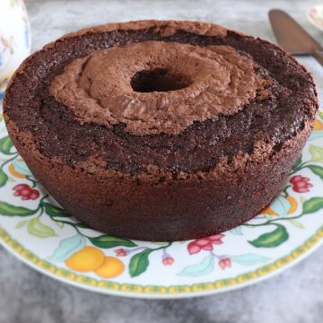
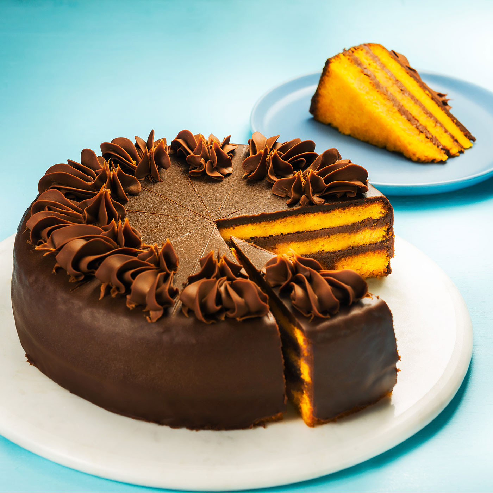

Bolo de Chocolate

- 2 xícaras de farinha de trigo.
- 2 xícaras de nescau.
- 1 xícara de açúcar.
- 1 colher de sopa cheia de fermento para bolo.
- 1 xícara de óleo de soja.
- 3 ovos inteiros.
- 1 xícara de leite quente.
Bolo de Cenoura

- 3 ovos
- 1 xícara de óleo de soja
- 2 cenouras bem grandes ou 3 se forem médias
- 2 xícaras de farinha de trigo
- 2 xícaras de açúcar
- 1 colher (sopa) de fermento em pó
Cobertura
- 4 colheres cheias de açúcar.
- 2 colheres cheias de chocolate em pó.
- 1 colher de manteiga.
- Um pouquinho de leite, apenas para desmanchar.